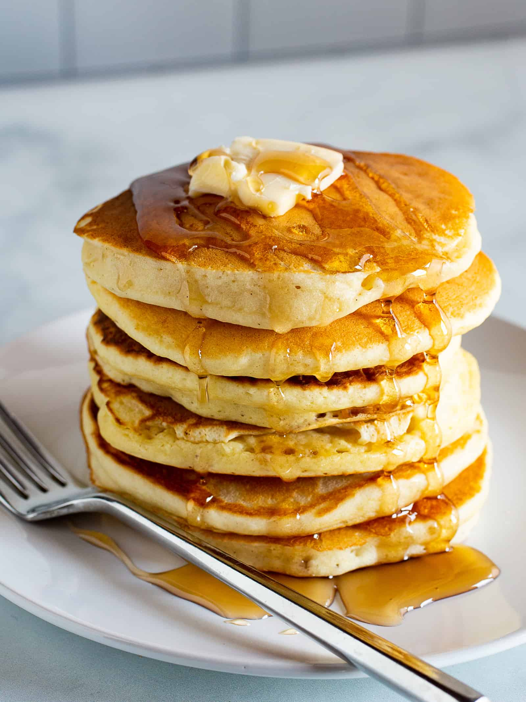

Gluten-Free Pancakes

This pancake recipe is both gluten-free and vegan!
I recommend tapioca flour and xantham gum as a substitute for regular wheat flower.
Oat flour also works as a substitute.
This recipe uses oatmilk, which I think turns out the best, and it's free from common allergens!
However, almond, soy, cashew, rice, or any other alternative milk should will do fine with this recipe.
Ingredients
- 1 Cup Gluten-Free Tapioca Flour
- 2 Tbsp White Cane Sugar
- 1 Tbsp Baking Powder
- 1/2 Tsp Salt
- 1/4 Tsp Xantham Gum
- 1 Cup Oat Milk
- 1 Tbsp Apple Cider Vinegar
- 1 Tsp Vanilla Extract
- 1 Tbsp Canola Oil
- Butter, to serve
- Maple Syrup, to serve
Optional
- 1 Tsp Cinnamon
- 1/2 Tsp Nutmeg
- 1/2 Cup Oatmeal
Steps
-
In a large bowl, combine the Gluten-Free Tapioca Flour, White Cane Sugar, Bakin Powder, Salt, and Xantham Gum.
If included, combine the Cinnamon, Nutmeg, and/or Oatmeal into the bowl.
Mix the ingredients together with a whisk.
-
In a separate bowl, combine the Oat Milk, Apple Cider Vinegar, and Vanilla Extract. Stir the ingredients together
-
Pour the bowl full of wet ingredients into the bowl full of dry ingredients. Stir the ingredients together with a whisk.
-
Let the bowl of batter sit for about 5 minutes. While waiting for the batter to settle, heat up a pan on medium-high heat on the stove.
-
Cover the pan in 1 Tbsp of Canola Oil.
-
Put half a cup of batter onto the pan. Wait until the edges of the pancake start to solidify, then flip it on its other side with a spatula.
-
Once finished, serve the pancake onto a plate.
-
Repeat the previous 2 steps until the pancake batter is used up.
-
Serve the pancakes with Butter and Syrup.